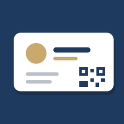

Política de privacidad
Español
Última actualización: 30 de septiembre de 2026
Resumen
Cardly no recopila, envía ni comparte ningún dato personal. No hay cuentas, ni servidores propios, ni anuncios, ni herramientas de analítica. Todo lo que guardas en la app se queda en tu dispositivo.
Datos que se guardan en tu dispositivo
- Tu tarjeta: los datos que escribes (nombre, cargo, empresa, teléfono, email, web, LinkedIn, dirección), tu foto y el diseño elegido.
- Los contactos que escaneas: los datos leídos de cada tarjeta o QR, la foto de la tarjeta, el evento y las notas que añadas.
Estos datos solo están en la app de tu dispositivo. Se borran al desinstalarla o con Contactos → Borrar todos los datos.
Cámara y fotos
La cámara se usa para fotografiar tarjetas de papel y leer códigos QR, y puedes elegir una imagen de tu galería (solo la que selecciones). El texto de la tarjeta se reconoce en el propio dispositivo: la imagen no se sube a ningún sitio.
Contactos del teléfono
Cardly no lee tu agenda. Cuando pulsas Añadir a los contactos, se abre el editor de contactos del sistema con los datos rellenos y eres tú quien decide guardarlo.
Compartir
Tu tarjeta (como archivo .vcf o imagen) y la exportación de contactos solo se envían cuando tú lo eliges, con el menú de compartir del sistema y a la app o persona que selecciones. El código QR de tu tarjeta contiene los datos que hayas marcado para incluir.
Servicios del sistema
En iPhone, el reconocimiento de texto y el escáner usan las funciones integradas de iOS (Vision y VisionKit). En Android, usan ML Kit de Google incluido en la app y los escáneres de Google Play Services, que funcionan en el dispositivo; Google puede recibir datos técnicos y de diagnóstico de estos servicios según sus propias condiciones, nunca las imágenes ni los datos de tus tarjetas.
Menores
La app no recopila datos de nadie, tampoco de menores.
Cambios y contacto
Si esta política cambia, se actualizará en esta página con una nueva fecha. Para cualquier pregunta, contacta con soporte.
English
Last updated: September 30, 2026
Summary
Cardly does not collect, send or share any personal data. There are no accounts, no servers of ours, no ads and no analytics. Everything you save in the app stays on your device.
Data stored on your device
- Your card: the details you enter (name, job title, company, phone, email, website, LinkedIn, address), your photo and the design you choose.
- The contacts you scan: the details read from each card or QR code, the photo of the card, and the event and notes you add.
This data only exists in the app on your device. It is deleted when you uninstall the app or use Contacts → Delete all data.
Camera and photos
The camera is used to capture paper business cards and read QR codes, and you can pick an image from your photo library (only the one you select). Text recognition runs on your device: images are never uploaded anywhere.
Phone contacts
Cardly does not read your address book. When you tap Add to phone contacts, the system contact editor opens with the details filled in, and you decide whether to save it.
Sharing
Your card (as a .vcf file or an image) and the contacts export are only sent when you choose to, through the system share sheet, to the app or person you select. Your card's QR code contains the details you chose to include.
System services
On iPhone, text recognition and scanning use the built-in iOS features (Vision and VisionKit). On Android, they use Google's ML Kit bundled in the app and the Google Play services scanners, which run on the device; Google may receive technical and diagnostic data from these services under its own terms, never the images or the details of your cards.
Children
The app does not collect data from anyone, including children.
Changes and contact
If this policy changes, it will be updated on this page with a new date. For any questions, contact support.